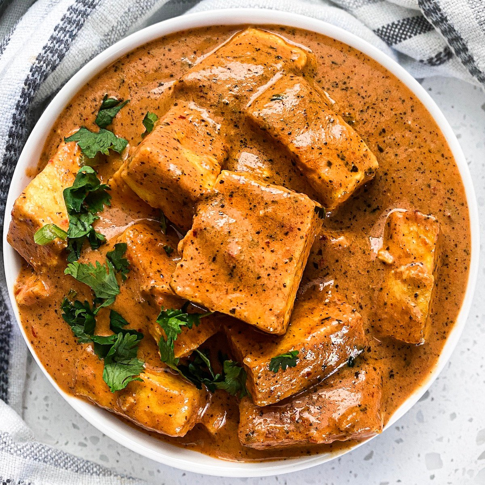
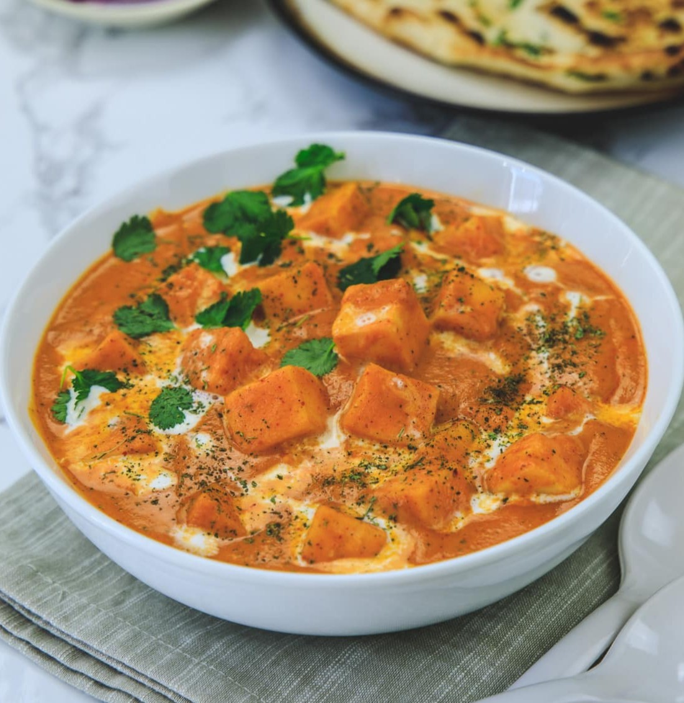

Paneer Butter Masala

This paneer butter masala is pure comfort food in a bowl.
I started making it on quiet weekends when I craved something rich, cozy, and full of flavor - and now it's in regular rotation.
The paneer gets lightly fried until golden, then simmered in a creamy, spiced tomato sauce that's equal parts fragrant and indulgent.
The mix of ground cashews, garam masala, and a touch of sugar gives it that classic restaurant-style taste, without the heaviness.
Whether you serve it with rice, naan, or just eat it straight from the pan (guilty), it's a dish that feels like a warm hug every time.
General Info:
- Prep Time: 10 mins
- Cook Time: 20 mins
- Total Time: 38 mins
- Servings: 4
Nutrional Facts:
- Calories: 469
- Fat: 41g
- Carbs: 15g
- Protein: 11g
Ingredients:
- 0.5 cup vegetable oil
- 0.5 pound paneer, cut into 0.5-inch cubes
- 2 tablespoons butter
- 2 onions, finely chopped
- 1 teaspoon ginger paste
- 1 teaspoon garlic paste
- 1 tablespoon ground cashews
- 1 teaspoon ground red chiles
- 0.5 teaspoon ground cumin
- 0.5 teaspoon ground coriander
- 0.5 teaspoon garam masala
- 1 (8 ounce) can tomato sauce
- 0.5 cup half-and-half
- 0.5 cup milk
- 0.5 teaspoon white sugar
- 0.5 teaspoon salt
Steps:
- Gather all ingredients.
- Heat oil in a large skillet over medium heat; fry paneer in batches until golden, about 5 minutes.
- Transfer fried paneer to a paper towel-lined plate to drain, retaining vegetable oil in skillet.
- Melt butter in the same skillet over medium heat; cook and stir onion until golden brown, about 10 minutes.
- Add ginger paste and garlic paste. Continue to cook until fragrant, about 1 minute more.
- Stir cashews, ground red chiles, cumin, coriander, and garam masala into the onion mixture. Cook and stir for 1 minute.
- Stir tomato sauce, half-and-half, milk, sugar, and salt into spice mixture; simmer until thickened, about 5 minutes.
- Reduce heat to low. Add fried paneer and simmer until heated through, about 5 minutes more.

Back to Recipes